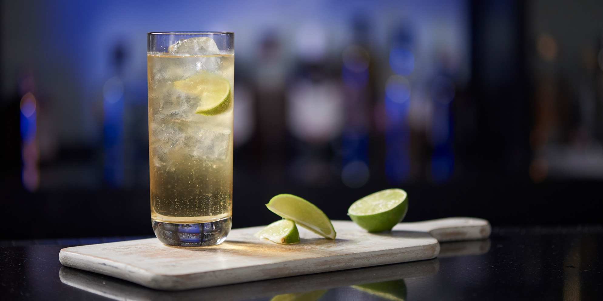
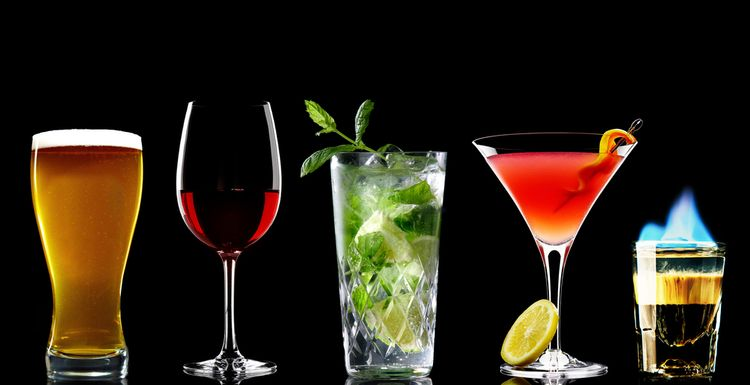
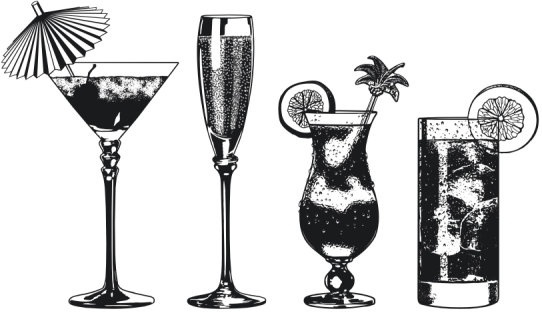
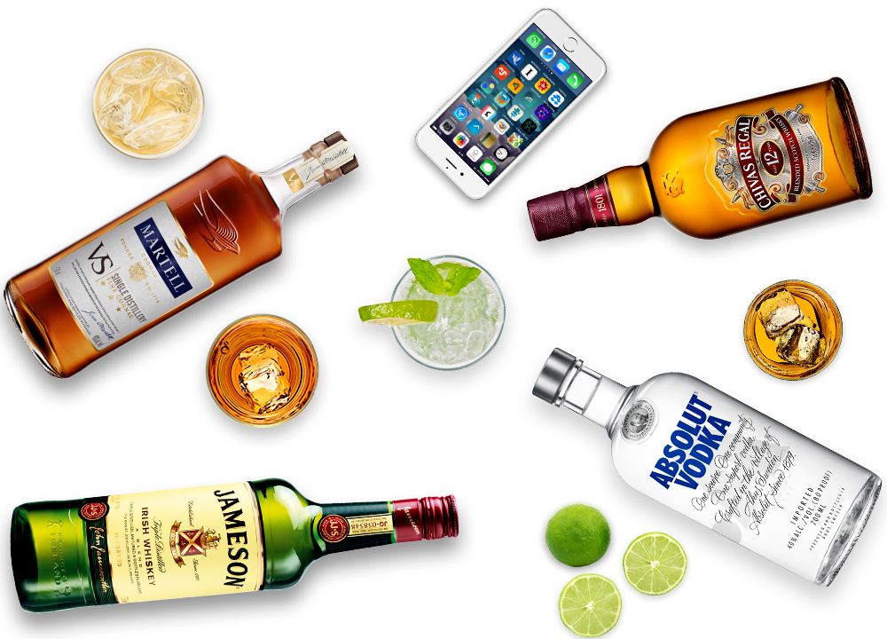

<ion-header>
  <ion-navbar>
    <button ion-button menuToggle>
      <ion-icon name="menu"></ion-icon>
    </button>
    <ion-title>Home</ion-title>
  </ion-navbar>
</ion-header>

<ion-content padding class="card-background-page">
  <h3>Ionic Menu Starter</h3>

  <p>
    If you get lost, the <a href="http://ionicframework.com/docs/v2">docs</a> will show you the way.
  </p>

  <button ion-button secondary menuToggle>Toggle Menu</button>

  <ion-card>
    
    <div class="card-title">Best Bars</div>
    <div class="card-subtitle">41 Listings</div>
  </ion-card>

  <ion-card>
    
    <div class="card-title">Most Loved</div>
    <div class="card-subtitle">64 Listings</div>
  </ion-card>

  <ion-card>
    
    <div class="card-title">Fine Dining</div>
    <div class="card-subtitle">72 Listings</div>
  </ion-card>

  <ion-card>
    
    <div class="card-title">Best Drinks Served</div>
    <div class="card-subtitle">28 Listings</div>
  </ion-card>
</ion-content>
